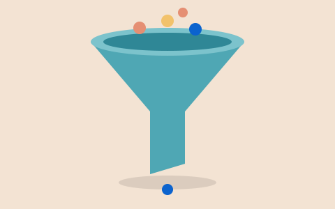
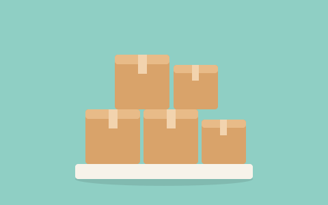
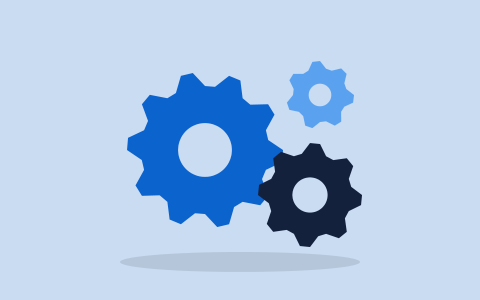
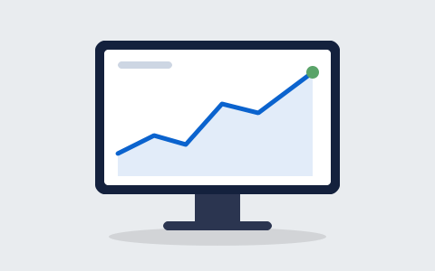

Interlocutors comercials
Fitxa única de clients, proveïdors i leads amb persones de contacte, adreces, condicions i historial d'activitats.
Tots els mòduls de SAP Business One comparteixen una única base de dades: una venda actualitza a l'instant l'estoc, la comptabilitat i la fitxa del client.
El CRM forma part del mateix sistema: l'equip comercial veu l'historial complet del client, incloses comandes, factures i cobraments.
Fitxa única de clients, proveïdors i leads amb persones de contacte, adreces, condicions i historial d'activitats.

Seguiment de cada oportunitat per etapes, amb import previst, probabilitat de tancament i previsió de vendes.
Creació de campanyes per correu i segmentació de clients, amb les respostes vinculades a les oportunitats.
Trucades de servei, contractes de manteniment, garanties i base de solucions per resoldre incidències.
El nucli de SAP Business One: automatitza els processos interns, des de la compra de material fins al tancament comptable.
Llibre major, impostos, bancs, cobraments i pagaments, pressupostos i centres de cost, amb els assentaments generats automàticament.

Estoc en diversos magatzems i ubicacions, lots i números de sèrie, valoració d'existències i llistes de preus.
Flux complet d'ofertes, comandes, albarans, factures i devolucions, tant de clients com de proveïdors.

Llistes de materials, ordres de fabricació i planificació de necessitats (MRP) per comprar i produir el just.
Fases, tasques, recursos i fulls d'hores, amb el cost i la facturació de cada projecte.

Quadres de comandament, informes amb Crystal Reports i analítica en temps real sobre SAP HANA.
Accés des del navegador i des de l'app mòbil per consultar clients, estoc i aprovacions fora de l'oficina.
Com se situa SAP Business One davant d'altres solucions habituals a les pimes.
| Criteri | SAP Business One | Microsoft Dynamics 365 Business Central | Odoo | Pipedrive |
|---|---|---|---|---|
| Tipus | ERP amb CRM integrat | ERP (CRM a part) | Suite modular ERP + CRM | Només CRM de vendes |
| Desplegament | On-premise o núvol | Núvol o on-premise | Núvol o on-premise | Només núvol (SaaS) |
| Llicència | Propietària, per usuari | Propietària, per usuari | Community lliure; Enterprise de pagament | Propietària, per usuari |
| Empresa tipus | Pimes d'1 a 300 usuaris | Pimes, entorn Microsoft | Des d'autònoms fins a pimes | Equips comercials B2B |
| Finances, estoc i producció | Sí, de sèrie | Sí | Sí, per mòduls | No |
| Implantació típica | 3 a 6 mesos amb partner | Setmanes o mesos amb partner | Variable segons mòduls | Minuts o dies |
Rang de preu orientatiu de la llicència principal en modalitat de subscripció (sense implantació).
SAP Business One: 95–190 USD · Business Central: 80–110 USD · Pipedrive: 14–79 EUR. Fonts: ERP Research, CostBench, Microsoft i Pipedrive (2026).